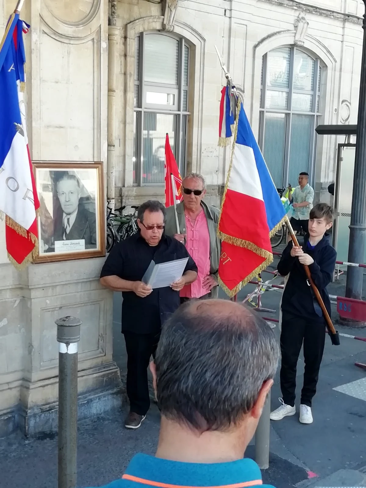
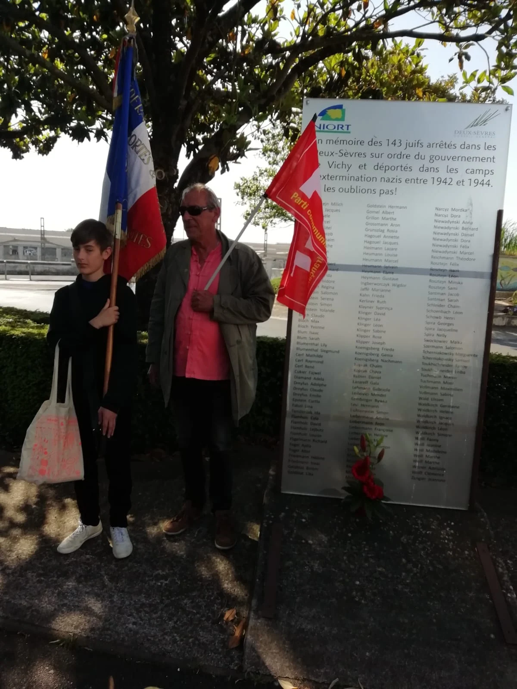
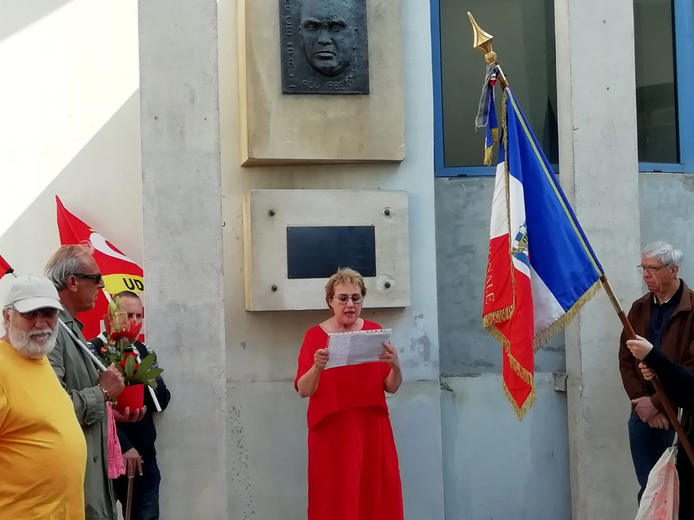
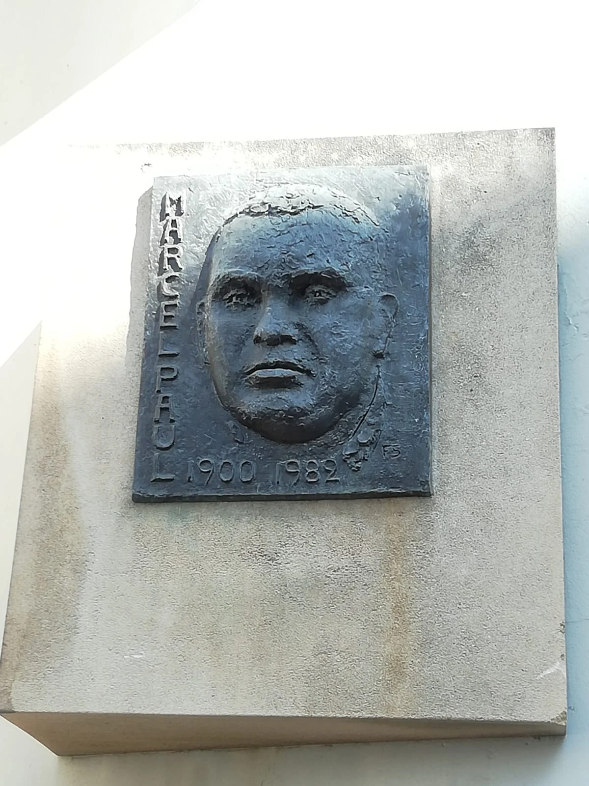
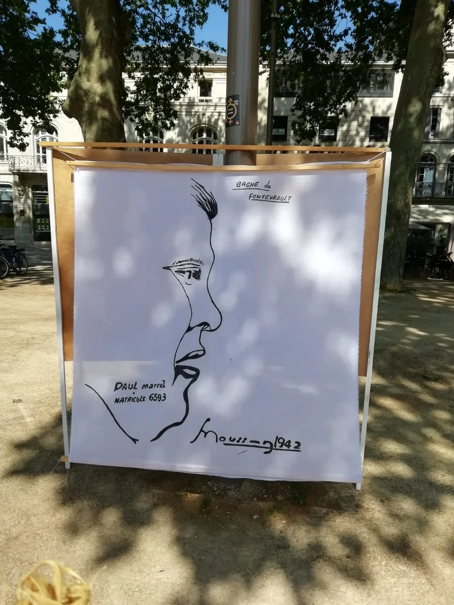
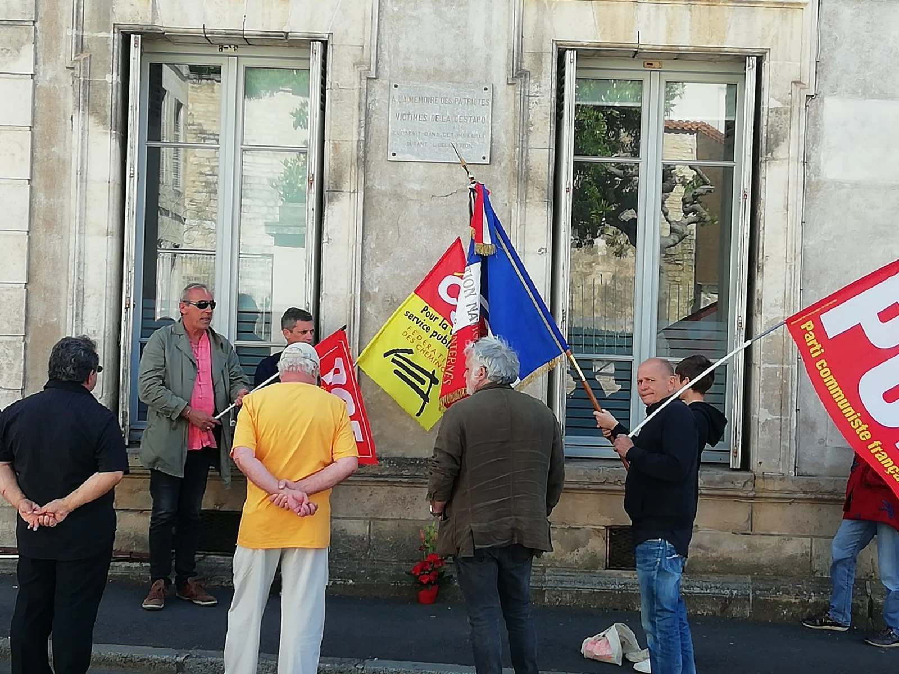
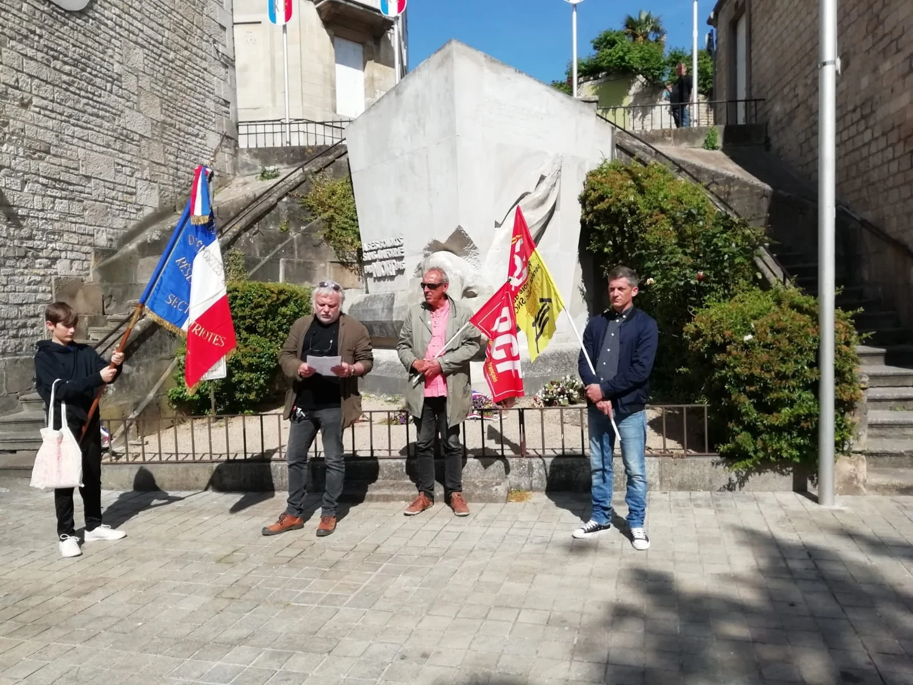

Compte rendu fédéral
À Niort, nous faisons vivre la mémoire du Conseil national de la Résistance
Date indiquée par Facebook · 1 juin 2023
Repères éditoriaux
Le 27 mai 2023 marquait les 80 ans de la création du Conseil national de la Résistance. Notre publication rend également hommage à Odette Nilès, résistante communiste décédée le même jour.
Texte conservé avec la publication
27 mai 2023, jour anniversaire de la création du Conseil National de la Résistance.
27 mai 2023, jour où s'est éteinte Odette Nilès, symbole de la jeunesse résistante. La communiste, fiancée de Guy Mocquet était présidente de l'Amicale de Châteaubriant. On se souvient de sa venue il y a plusieurs années à la fête de la fédération du PCF79, accompagnée de sa camarade communiste et amie Odette Roux, Maire des Sables d'Olonne de 1945 à 1947, qui fut la première femme maire d'une sous-préfecture.
27 mai 2023, jour où la fédération du Parti Communiste Français 79 avec le soutien de l'ADIRP (Association des Déportés Internés Résistants et Patriotes) 79 et l'Union Syndicale CGT des Retraités des Deux- Sèvres, la section CGT des retraités des Cheminots du Sud Deux-Sèvres, l'Institut d'Histoire Sociale des Cheminots de Niort, l'ANCAC (Association Nationale des Cheminots Anciens Combattants) section de Niort, l'Union Départementale CGT 79, Génération.S, la LDH (Ligue des Droits de l'Homme) 79, la Libre Pensée 79, célébrait à Niort la naissance du CNR au travers d'un parcours pédestre commémoratif.
D'abord à la gare SNCF en mémoire de Pierre Semard, secrétaire général de la Fédération CGT des cheminots et dirigeant du Parti communiste français, fusillé par les Allemands le 7 mars 1942, ainsi qu'à la mémoire de tous les cheminots déportés et fusillés. Puis devant la stèle énumérant les noms des 143 juifs des Deux-Sèvres arrêtés et déportés. Ce parcours a mené ensuite au parking Marcel Paul, ce résistant qui fut ministre communiste du Général de Gaulle à la Libération; puis ce fut une étape devant l'ancien siège de la Gestapo rue Alsace Lorraine avant de clore ce parcours commémoratif devant le monument aux combattants sans uniforme place des Martyrs de la Résistance.
A l'heure où certain.e.s récupèrent l'histoire de la résistance, à l'heure où tout repère idéologique se perd, il est primordial pour les communistes de ne pas déserter ce terrain mémoriel.
Le message d'Odette Nilès décédée à 100 ans qui "tant que ses jambes puissent la porter" allait "dans les écoles pour que vive la mémoire de la Résistance".
A nous de perpétuer son message.







Sources
Archive rouge · export Facebook · AR-0002-FB-01640
À lire aussi · 80 ans du Conseil national de la Résistance. L’appel du 27 mai à Niort